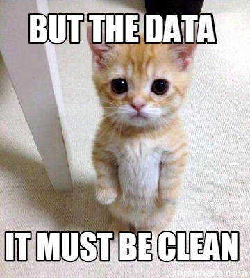
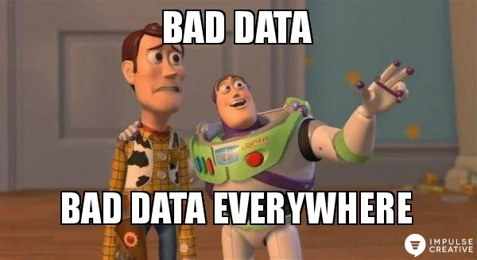

── Attaching core tidyverse packages ──────────────────────── tidyverse 2.0.0 ──
✔ dplyr 1.1.4 ✔ readr 2.1.4
✔ forcats 1.0.0 ✔ stringr 1.5.0
✔ ggplot2 3.5.0 ✔ tibble 3.2.1
✔ lubridate 1.9.3 ✔ tidyr 1.3.0
✔ purrr 1.0.2
── Conflicts ────────────────────────────────────────── tidyverse_conflicts() ──
✖ dplyr::filter() masks stats::filter()
✖ dplyr::lag() masks stats::lag()
ℹ Use the conflicted package (<http://conflicted.r-lib.org/>) to force all conflicts to become errors5 Einführung in Tibbles
In diesem Kapitel werden wir die Grundlagen von Tibbles kennenlernen, eine moderne Datenstruktur in R, die besonders im tidyverse verwendet wird. Tibbles sind eine Weiterentwicklung der traditionellen Dataframes und bieten einige Vorteile in der Handhabung und Datenmanipulation.
5.1 Tibbles als Datentyp
Tibbles sind ein Objekttyp in R, entwickelt, um mit dem Tidyverse kompatibel zu sein. Im Gegensatz zu traditionellen Dataframes bieten Tibbles eine vereinfachte, aber robustere Datenmanipulation, was sie ideal für Datenanalyse macht.
Tibbles sind eine moderne Variante von dataframes. Dataframes sind Teil der “Grundausstattung” von R (auch häufig “base-R” genannt). Wir haben bereits in Kapitel x kurz über dataframes gesprochen, hier nochmals die Definition: - Dataframe: enthalten Daten, im Grunde eine flexible Matrix, die unterschiedliche Vektoren mit unterschiedlichen R-Objekten enthalten kann und organisiert ist, als hätte sie Variablen und Beobachtungen. Wir werden dies im nächsten Kapitel genauer besprechen. Dataframes kann man wie folgt erstellen:
5.2 Indexierung im Allgemeinen
5.2.1 Indexierung mit Ganzzahlen
Man kann bestimmte Elemente auswählen, indem man Ganzzahlen verwendet.
5.2.2 Indexierung mit logischen Werten
Man kann einen logischen Vektor anstelle der Ganzzahlen-Indexierung verwenden, um bestimmte Elemente zu filtern.
5.3 Einfache Funktionen
Man ist oft an bestimmten Eigenschaften der Daten interessiert. Funktionen wie sum(), mean() und sd() sind hierbei nützlich. Im Verlaufe des Semesters werden wir noch mehr solche Funktionen kennenlernen.
Wie wir oben gesehen haben, enthält die Variable age fehlende Werte. Um den Mittelwert der nicht fehlenden Werte zu berechnen, müssen wir deshalb das Argument na.rm = TRUE hinzufügen:
5.4 Werte zurücksetzen, neue Spalten oder Zeilen hinzufügen
5.4.1 Werte zurücksetzen
Fehler in den Daten können einfach korrigiert werden.
5.4.2 Spalten hinzufügen
Neue Variablen können leicht hinzugefügt werden.
# Neue Variable 'gender' hinzufügen
gender <- c('F', 'F', 'M', 'M', 'M', 'F')
df$gender <- gender
# Alternativ mit add_column
df <- add_column(df, gender_new = gender)
# Variable entfernen
df <- select(df, -gender_new)
print(df)# A tibble: 6 × 4
id age grade gender
<dbl> <dbl> <chr> <chr>
1 1 40 A F
2 2 30 A+ F
3 3 33 B M
4 4 NA B- M
5 5 26 B+ M
6 6 38 A F 5.4.3 Zeilen hinzufügen
Neue Beobachtungen können mit der Funktion add_row() hinzugefügt werden.
# A tibble: 7 × 4
id age grade gender
<dbl> <dbl> <chr> <chr>
1 1 40 A F
2 2 30 A+ F
3 3 33 B M
4 4 NA B- M
5 5 26 B+ M
6 6 38 A F
7 7 25 C+ M # Zeile entfernen
# df$id != 7 generiert den folgenden Vektor: TRUE TRUE TRUE TRUE TRUE TRUE FALSE, der die Grundlage für die Indizierung bildet
df <- df[df$id != 7, ]
print(df)# A tibble: 6 × 4
id age grade gender
<dbl> <dbl> <chr> <chr>
1 1 40 A F
2 2 30 A+ F
3 3 33 B M
4 4 NA B- M
5 5 26 B+ M
6 6 38 A F 5.5 Tidy Data
Tidy Data ist ein Konzept in der Datenanalyse, das sicherstellt, dass Daten in einem klaren und konsistenten Format vorliegen. In Tidy Data hat jede Variable ihre eigene Spalte, jede Beobachtung ihre eigene Zeile und jede Art von beobachteter Einheit bildet eine Tabelle. Dies erleichtert die Manipulation, Visualisierung und Modellierung der Daten.
5.5.1 Prinzipien des Tidy Data Ansatzes
- Jede Variable hat ihre eigene Spalte.
- Jede Beobachtung hat ihre eigene Zeile.
- Jede Art von beobachteter Einheit bildet eine Tabelle.

5.5.2 Beispiel für Tidy Data
Schauen wir uns ein Beispiel an, um die Prinzipien von Tidy Data zu verdeutlichen:
# Erstellen eines Tidy Data Tibble
tidy_data <- tibble(
country = c('Afghanistan', 'Brazil', 'China', 'Afghanistan', 'Brazil', 'China'),
year = c(1999, 1999, 1999, 2000, 2000, 2000),
value = c(745, 37737, 212258, 2666, 80488, 213766)
)
# Daten anzeigen
tidy_data| country | year | value |
|---|---|---|
| Afghanistan | 1999 | 745 |
| Brazil | 1999 | 37737 |
| China | 1999 | 212258 |
| Afghanistan | 2000 | 2666 |
| Brazil | 2000 | 80488 |
| China | 2000 | 213766 |
5.5.3 Beispiel für Nicht-Tidy Data
Im Gegensatz dazu sehen Nicht-Tidy Data oft unorganisiert aus und erschweren die Analyse. Hier ist ein Beispiel für Nicht-Tidy Data, das dem Datensatz table4a ähnelt:
5.5.4 Umwandeln von Nicht-Tidy Data in Tidy Data
Um Nicht-Tidy Data in Tidy Data zu konvertieren, kann man die Funktion pivot_longer() verwenden. Hier zeigen wir, wie man dies erreicht:
5.5.4.1 Beispiel für Weites Format zu Langem Format
# Nicht-Tidy Data in Tidy Data umwandeln (Weit zu Lang)
tidy_from_non_tidy <- pivot_longer(non_tidy_data,
cols = c(`1999`, `2000`),
names_to = "year",
values_to = "value")
# Daten anzeigen
tidy_from_non_tidy| country | year | value |
|---|---|---|
| Afghanistan | 1999 | 745 |
| Afghanistan | 2000 | 2666 |
| Brazil | 1999 | 37737 |
| Brazil | 2000 | 80488 |
| China | 1999 | 212258 |
| China | 2000 | 213766 |
Mit diesen Prinzipien und Techniken können Sie sicherstellen, dass Ihre Daten stets im Tidy Format vorliegen, was die Datenanalyse erheblich erleichtert. Leider kommt “non-tidy data” in alle Farben und Formen. Deshalb gibt es kein einfaches Rezept, wie man von nicht-tidy zu tidy Data kommt. Wir werden aber im Verlauf des Semesters (vor allem im nächsten Kapitel) Funktionen kennenlernen, die dafür hilfreich sind.

Durch das Verständnis dieser grundlegenden Operationen können Sie Daten in R effizient verwalten und analysieren.